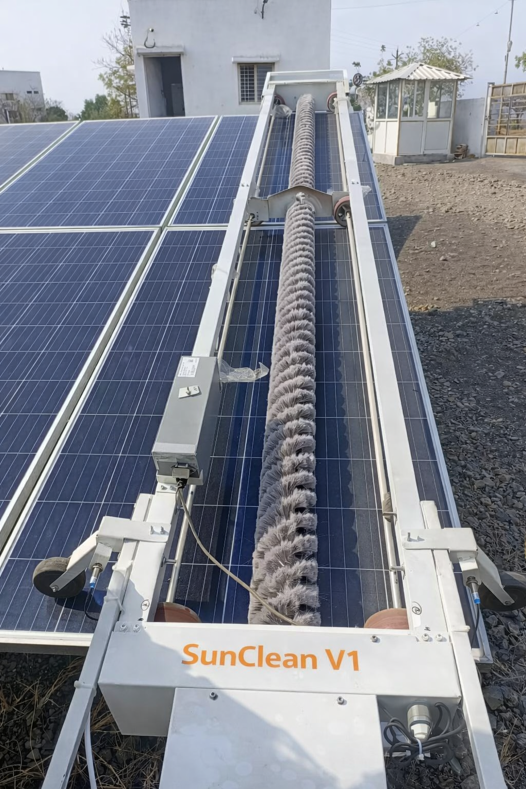
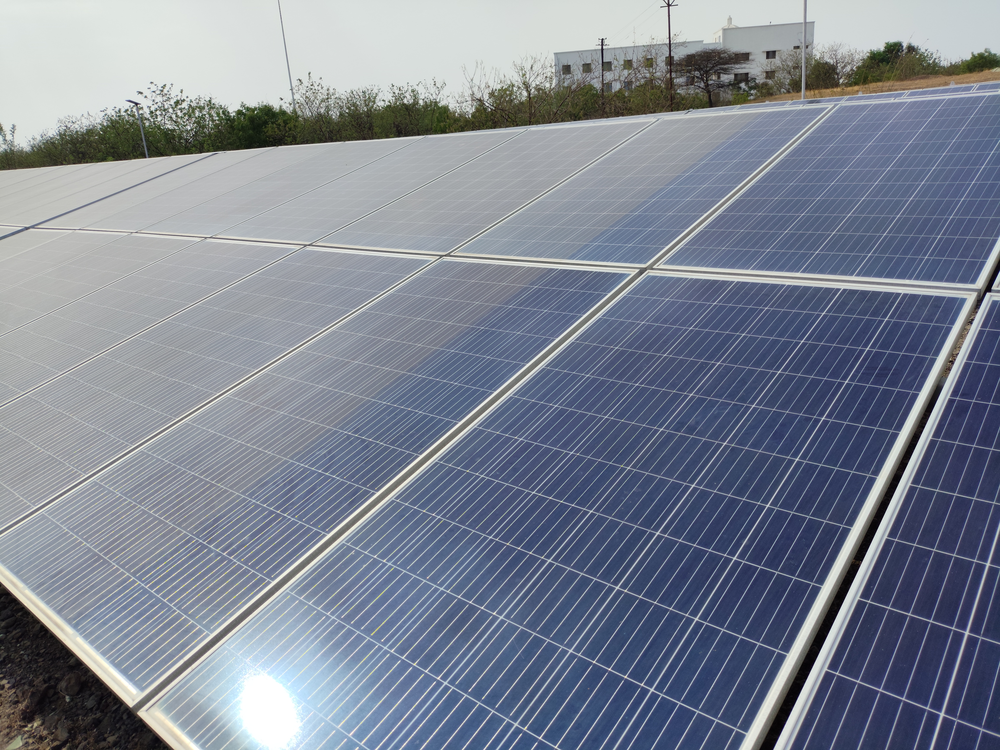

Solar power plants are not short-term assets. They are designed to operate for 25 years and beyond—often in some of the harshest environmental conditions on earth.
At SunClean Tech Private Limited, we exist to solve one critical but often underestimated challenge in this journey: keeping solar panels clean, consistently, efficiently, and sustainably—year after year.
SunClean Tech was founded in 2025 by Shashank Vaidya and Tejshri Vaidya, brother and sister, both with hands-on experience in the solar energy industry.
While working across different segments of the solar ecosystem, they repeatedly witnessed the same ground reality:
Manual cleaning, excessive water usage, inconsistent results, safety risks, and rising O&M costs were silently eroding plant performance.
What the market truly needed was not just a machine—but a reliable, engineering-driven cleaning system designed specifically for the realities of solar plant operations.
That realization led to the creation of SunClean Tech.

We started with a simple but powerful belief:
With this philosophy, SunClean Tech was built to engineer practical, scalable, and intelligent robotic cleaning solutions for modern solar plants.
Purpose-built systems, not generic fabrication.
Designed specifically for real utility and commercial solar operations.
Created to maximize output and reduce long-term operational losses.
To maximize solar power plant performance through intelligent, reliable, and sustainable robotic cleaning solutions.
To become a globally trusted clean-tech company enabling efficient solar operations through automation and innovation.
SunClean Tech is led by founders who understand solar not only from a technical lens—but from the realities of deployment, maintenance, and long-term performance.

Founder & CEO
With deep exposure to the solar industry and strong technical and commercial understanding, Shashank focuses on translating real operational challenges into practical engineering solutions.

Co-Founder & CFO
With experience in the solar sector and a strong focus on execution, quality, and sustainability, Tejshri drives product reliability and long-term value creation.

Whether you are building, owning, or operating solar assets, SunClean Tech is ready to support you across the entire lifecycle of your plant.
We are not just building robots. We are building the future of sustainable solar plant maintenance.
📩 Connect with us to learn how we can help your solar plant perform at its best—for the next 25 years and beyond.